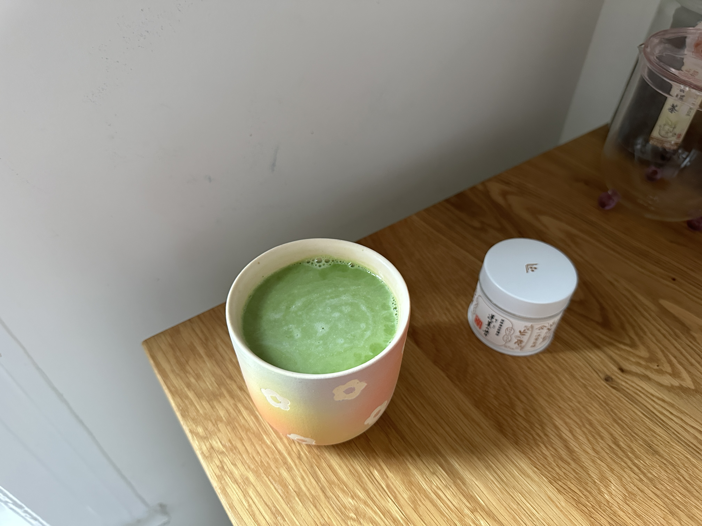
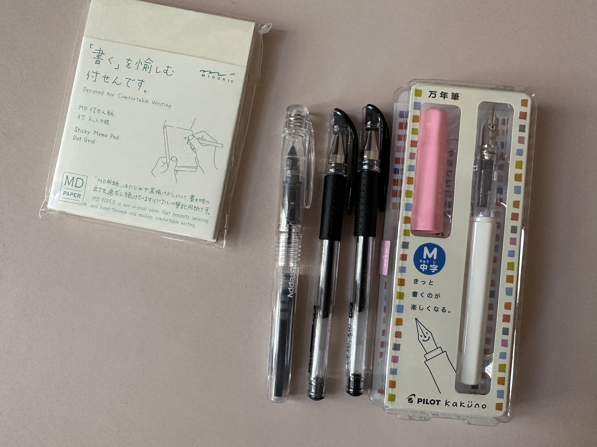
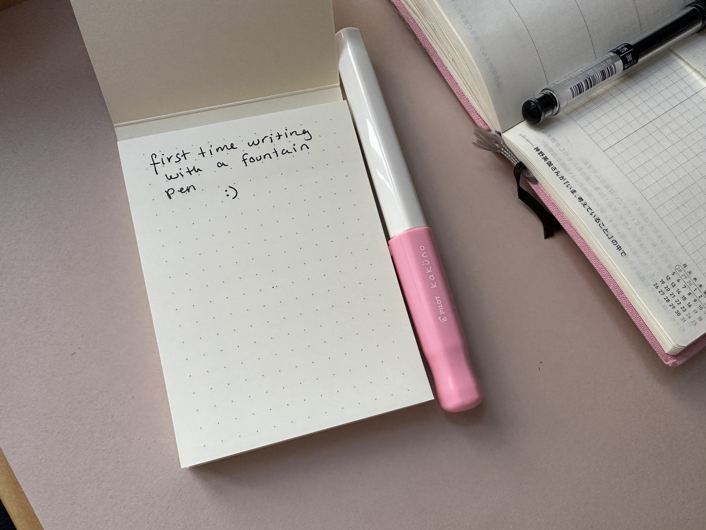

happy sunday. i got some new toys :)
i never understood the fountain pen hype because i’ve never actually used a good one. but i was browsing jetpens last week looking for a notebook that would change my brain chemistry (didn’t end up getting one — the several unfilled notebooks i have are fine) and wandered into a post about different kinds of pens & which one is right for you etc etc etc. (i got two of their recommended “best gel pen,” the uni-ball signo um-151.)
somehow from there i ended up reading “The Best Beginner Fountain Pens” & adding the platinum preppy fine nib + the pilot kakuno medium nib to my cart. so now i’ve got two fountain pens.

i was worried i wouldn’t like them, or that i wouldn’t be able to write well with them, or whatever. but they’re actually really, really nice — they’re so smooth & easy to write with. i get why people like these now. (there’s also just something fun about having a pen that requires more care & maintenance than your average rollerball; it’s like a pet.)

the pens i steal from hotels get the job done just as well as anything else, and i can scribble notes on whatever piece of paper i have in front of me — that’s all i need. but it’s nice to have a little treat sometimes.